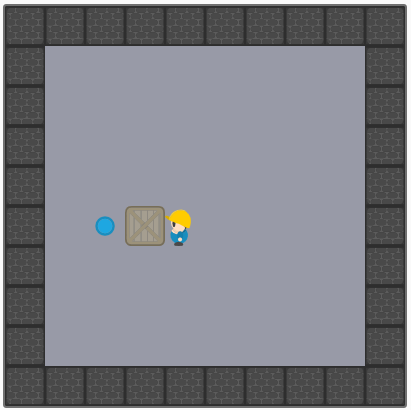

Welcome!
On this site, you can play a version of the classic Sokoban game. It works entirely in your browser, and supports
mobile devices as well! If you know what to do you can immediately click on the Play button, select a
map and start playing. If you would like to know more about how to play, you can continue reading this page. You can also
visit the about section by clicking on the About button to learn more about the technical details behind
this site and its author.
Goal of the game

By performing one more move to the left, the map will be completed.
Your goal is to move all the crates on the map to the target tiles, which are represented by cyan circles.
You can move the crate by pushing it around. The crate can move only if there is nothing in its way. You
are not allowed to pull the crates. You should aim to finish the game in as few moves as possible. If you
make a mistake, you are allowed to undo a move. In this version, you can undo as many moves as you want and
the moves you undo won't be counted towards the total amount of moves you needed to complete the map.
How to play
Controls
If you have a keyboard, you can use the arrow keys or WASD to
move around and Backspace to undo a move.
Game controls
If you prefer clicking or you just don't have a keyboard at hand, you can use the buttons that are
located below the map to control the game as pictured in the image on the right. If the map is too big
and you cannot reach them, you can uncheck the Lock controls movement checkbox, which is also
located below the game map. This will allow you to freely drag the control button around the page. If
for some reason these controls are getting in your way, you can hide them completely by unchecking the
Show controls checkbox.
Saving a game in progress
You can save a game in progress by clicking on the Save game button located below game map.
This will save all the information about your current map and the moves that you made. You can load the
game later from the map selection screen by clicking on the Load saved game button.
Keep in mind that you only have a single save slot!
If you get stuck
In case you get stuck you can either reset the map you're playing on to its initial state by clicking
the Reset game button, or you can abandon the map entirely by pressing the Abandon game
button. This will return you to the map select screen.
Custom maps
You can play on custom maps as well - for that you just need to click on the Load map from file
button located in the map select screen. This will allow you to load a map from a file saved on your computer.
Please note that there is no scoreboard function for maps that are loaded from local files, but that allows this mode
to work even when it's not possible to connect to the game server.
If you are interested in creating your own maps, you can head to the About section to learn about a
map editor for this game.